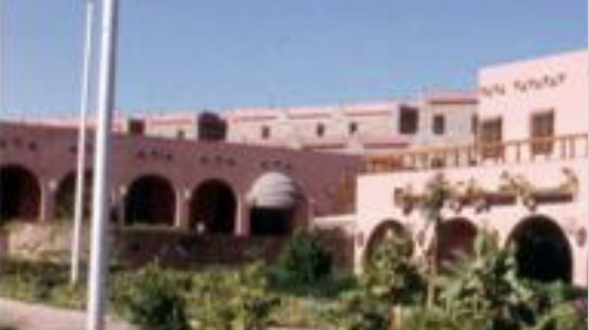

Architectural and experiential design
We deliver context-driven, high-impact architecture across sectors, fusing aesthetics, functionality and user experience into signature landmarks and spaces.
PUD's architecture grew from its planning. Hotels, offices, university buildings, factories and residences sit in the portfolio beside the master plans, from the Hilton Dahab Village Hotel and the Rotana offices on the Nile to the Faculty of Medicine at Ain Shams University and private residences in Riyadh and Dubai.
Design is guided by the setting, the climate and the people who will use the building, in the tradition begun by the founder's search for architecture that is at once authentic and contemporary.
What this covers
- Hotels and resorts
- Offices and mixed-use buildings
- Education and healthcare buildings
- Residential and villas
- Interior design
- Design review and client representation
Selected projects
 Hilton Dahab Village HotelDahab, Sinai · 1991
Hilton Dahab Village HotelDahab, Sinai · 1991
Tut Amun Village Hotel and ResortAswan · 1981 Urban Renewal of the Faculty of Agriculture, Cairo UniversityGiza (Cairo University) · 2010
Urban Renewal of the Faculty of Agriculture, Cairo UniversityGiza (Cairo University) · 2010 City of Knowledge and University of Islamic SciencesNajaf · 2008
City of Knowledge and University of Islamic SciencesNajaf · 2008 Maria Heights Tourist ComplexHoms · 2008
Maria Heights Tourist ComplexHoms · 2008 Rotana Cafe, ZamalekZamalek, Cairo · 2008
Rotana Cafe, ZamalekZamalek, Cairo · 2008 The Royal OasisSheikh Zayed City · 2001
The Royal OasisSheikh Zayed City · 2001 Al Hashimi, Al Kattan, Al Shirbini and Al Zahem Hotels and Residential ComplexesMadinah · 1998
Al Hashimi, Al Kattan, Al Shirbini and Al Zahem Hotels and Residential ComplexesMadinah · 1998 Organ Transplant Centre, Nasser Institute for Research and TreatmentGreater Cairo
Organ Transplant Centre, Nasser Institute for Research and TreatmentGreater Cairo Green Egypt PackhouseGiza
Green Egypt PackhouseGiza Fragrance Factory (Greiss), 6th of October City6th of October City2025Port Ghalib Master PlanMarsa Alam · 2025
Fragrance Factory (Greiss), 6th of October City6th of October City2025Port Ghalib Master PlanMarsa Alam · 202548 projects. Where we apply it:
Questions people ask
Does PUD design buildings as well as cities?
Yes. PUD has designed hotels, offices, university buildings, factories and private residences, and also acts as client representative and design manager on selected projects.